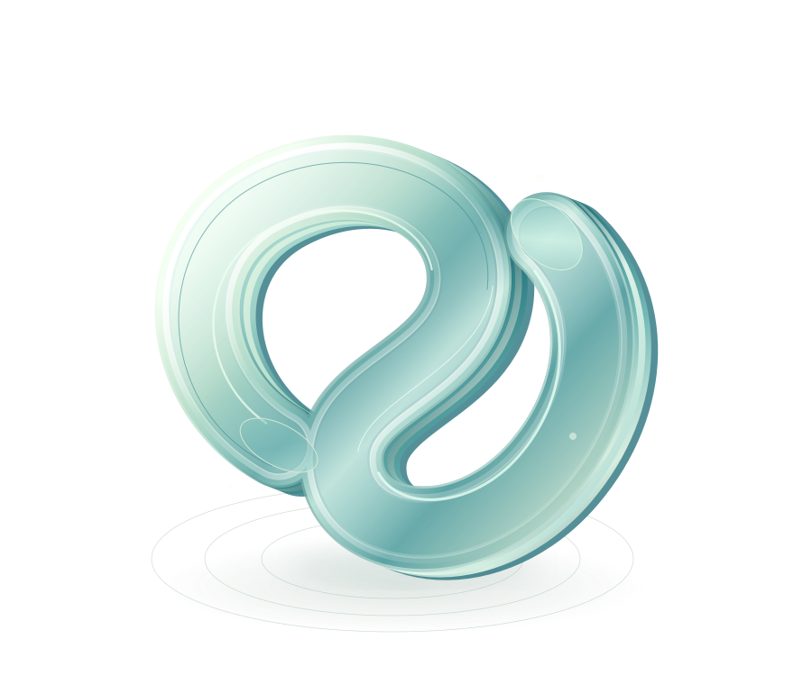

Jacksonville roots. Practical systems.
Keep the
work moving.
Missed calls. Quotes waiting on a reply. Updates nobody has time to send.
We connect the loose ends, using the tools you already have.

The loose end
A missed call.
You're out on a job.
The next step
Ready to call back.
Details captured. Owner assigned.
Illustrative flow · Your team makes the call.
Built around your business.
Not another tool to babysit.
Not another tool to babysit.
Trades & field servicesProperty managementMarine & beyond